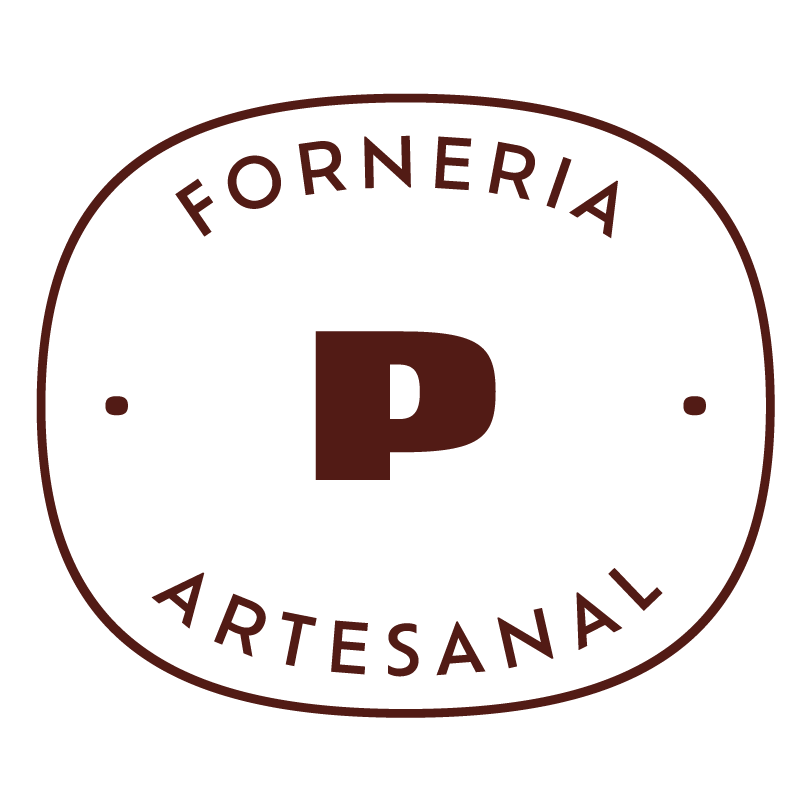

PÃO DE VERDADE · FORNERIA ARTESANAL · UBERLÂNDIA/MG
de participação
Certificamos, para os devidos fins, que
{{NOME}}
participou do {{CURSO}}, com carga horária de 5 horas ({{HORARIO}}), abrangendo {{CONTEUDO}}, realizado na Pão de Verdade — Forneria Artesanal, em Uberlândia/MG, em {{DATA}}.
Acompanhamento de 30 dias pelo WhatsApp
E, para constar, expedimos o presente certificado em Uberlândia/MG, aos {{DATA_EXTENSO}}.

Jonas Ferrari
Padeiro e Diretor — Pão de Verdade Ltda
CPF 004.824.050-82
Nº {{NUMERO}} · Pão de Verdade · Rua Mário Pinto Sobrinho, 156 — Santa Mônica · Uberlândia/MG